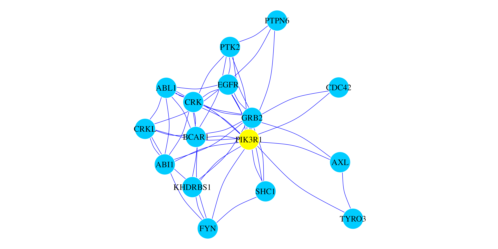
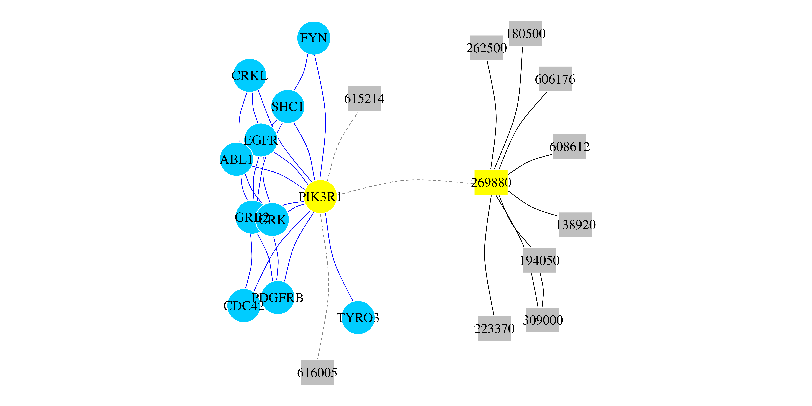

Random Walk with Restart on Multiplex and Heterogeneous Network
Alberto Valdeolivas
MMG, Marseille Medical Genetics U 1251, Faculte de Medecine, Francealvaldeolivas@gmail.com Source:
vignettes/RandomWalkRestartMH.Rmd
RandomWalkRestartMH.RmdAbstract
This vignette describes how to use the RandomWalkRestartMH package to run Random Walk with Restart algorithms on monoplex, multiplex, heterogeneous, multiplex-heterogeneous networks and full multiplex-heterogeneous networks It is based on the work we presented on the following article:
https://academic.oup.com/bioinformatics/article/35/3/497/5055408
Although, we have recently extended the method to take into account weigthed networksand full multiplex-heterogeneous networks (both networks connected by bipartite interactions are multiplex.)
Introduction
RandomWalkRestartMH (Random Walk with Restart on Multiplex and Heterogeneous Networks) is an R package built to provide an easy interface to perform Random Walk with Restart in different types of complex networks:
- Monoplex networks (Single networks).
- Multiplex networks.
- Heterogeneous networks.
- Multiplex-Heterogeneous networks.
It is based on the work we presented in the article:
https://academic.oup.com/bioinformatics/article/35/3/497/5055408
We have recently extended the method in order to take into account weighted networks. In addition, the package is now able to perform Random Walk with Restart on:
- Full multiplex-heterogeneous networks.
RWR simulates an imaginary particle that starts on a seed(s) node(s)
and follows randomly the edges of a network. At each step, there is a
restart probability, r, meaning that the particle can come
back to the seed(s) (Pan et al. 2004).
This imaginary particle can explore the following types of networks:
A monoplex or single network, which contains solely nodes of the same nature. In addition, all the edges belong to the same category.
A multiplex network, defined as a collection of monoplex networks considered as layers of the multiplex network. In a multiplex network, the different layers share the same set of nodes, but the edges represent relationships of different nature (Battiston et al. 2014). In this case, the RWR particle can jump from one node to its counterparts on different layers.
A heterogeneous network, which is composed of two monoplex networks containing nodes of different nature. These different kind of nodes can be connected thanks to bipartite edges, allowing the RWR particle to jump between the two networks.
A multiplex and heterogeneous network, which is built by linking the nodes in every layer of a multiplex network to nodes of different nature thanks to bipartite edges.
A full multiplex and heterogeneous network, in which the two networks connected by bipartite interactions are of multiplex nature. The RWR particle can now explore the full multiplex-heterogeneous network.
The user can integrate single networks (monoplex networks) to create a multiplex network. The multiplex network can also be integrated, thanks to bipartite relationships, with another multiplex network containing nodes of different nature. Proceeding this way, a network both multiplex and heterogeneous will be generated. To do so, follow the instructions detailed below
Please note that this version of the package does not deal with directed networks. New features will be included in future updated versions of RandomWalkRestartMH.
Installation of the RandomWalkRestartMH package
First of all, you need a current version of R. Older versions of RandomWalkRestartMH were distributed through Bioconductor. The maintained version is available from GitHub and can be installed by running the following commands in an R console:
# install.packages("pak")
pak::pkg_install("alberto-valdeolivas/RandomWalkRestartMH")A Detailed Workflow
In the following paragraphs, we describe how to use the RandomWalkRestartMH package to perform RWR on different types of biological networks. Concretely, we use a protein-protein interaction (PPI) network, a pathway network, a disease-disease similarity network and combinations thereof. These networks are obtained as detailed in (Valdeolivas et al. 2018). The PPI and the Pathway network were reduced by only considering genes/proteins expressed in the adipose tissue, in order to reduce the computation time of this vignette.
The goal in the example presented here is, as described in (Valdeolivas et al. 2018), to find candidate genes potentially associated with diseases by a guilt-by-association approach. This is based on the fact that genes/proteins with similar functions or similar phenotypes tend to lie closer in biological networks. Therefore, the larger the RWR score of a gene, the more likely it is to be functionally related with the seeds.
We focus on a real biological example: the SHORT syndrome (MIM code: 269880) and its causative gene PIK3R1 as described in (Valdeolivas et al. 2018). We will see throughout the following paragraphs how the RWR results evolve due to the the integration and exploration of additional networks.
Random Walk with Restart on a Monoplex Network
RWR has usually been applied within the framework of single PPI networks in bioinformatics (Kohler et al. 2008). A gene or a set of genes, so-called seed(s), known to be implicated in a concrete function or in a specific disease, are chosen as the starting point(s) of the algorithm. The RWR particle explores the neighbourhood of the seeds and the algorithm computes a score for all the nodes of the network. The larger it is the score of a node, the closer it is to the seed(s).
Let us generate an object of the class Multiplex, even
if it is a monoplex network, with our PPI network.
##
## Attaching package: 'igraph'## The following objects are masked from 'package:stats':
##
## decompose, spectrum## The following object is masked from 'package:base':
##
## union
data(PPI_Network) # We load the PPI_Network
## We create a Multiplex object composed of 1 layer (It's a Monoplex Network)
## and we display how it looks like
PPI_MultiplexObject <- create.multiplex(list(PPI=PPI_Network))## This graph was created by an old(er) igraph version.
## ℹ Call `igraph::upgrade_graph()` on it to use with the current igraph version.
## For now we convert it on the fly...
PPI_MultiplexObject## Number of Layers:
## [1] 1
##
## Number of Nodes:
## [1] 4317
##
## IGRAPH 37551a8 UNW- 4317 18062 --
## + attr: name (v/c), weight (e/n), type (e/c)
## + edges from 37551a8 (vertex names):
## [1] AAMP --VPS52 AAMP --BHLHE40 AAMP --GABARAPL2 AAMP --MAP1LC3B
## [5] VPS52 --TXN2 VPS52 --DDX6 VPS52 --MFAP1 VPS52 --PRKAA1
## [9] VPS52 --LMO4 VPS52 --STX11 VPS52 --KANK2 VPS52 --PPP1R18
## [13] VPS52 --TXLNA VPS52 --KIAA1217 VPS52 --VPS28 VPS52 --ATP6V1D
## [17] VPS52 --TPM3 VPS52 --KIF5B VPS52 --NOP2 VPS52 --RNF41
## [21] VPS52 --WTAP VPS52 --MAPK3 VPS52 --ZMAT2 VPS52 --VPS51
## [25] BHLHE40--AES BHLHE40--PRKAA1 BHLHE40--CCNK BHLHE40--RBPMS
## [29] BHLHE40--COX5B BHLHE40--UBE2I BHLHE40--MAGED1 BHLHE40--PLEKHB2
## + ... omitted several edgesTo apply the RWR on a monoplex network, we need to compute the adjacency matrix of the network and normalize it by column (Kohler et al. 2008), as follows:
AdjMatrix_PPI <- compute.adjacency.matrix(PPI_MultiplexObject)
AdjMatrixNorm_PPI <- normalize.multiplex.adjacency(AdjMatrix_PPI)Then, we need to define the seed(s) before running the RWR algorithm on this PPI network. As commented above, we are focusing on the example of the SHORT syndrome. Therefore, we take the PIK3R1 gene as seed, and we execute RWR.
SeedGene <- c("PIK3R1")
## We launch the algorithm with the default parameters (See details on manual)
RWR_PPI_Results <- Random.Walk.Restart.Multiplex(AdjMatrixNorm_PPI,
PPI_MultiplexObject,SeedGene)
# We display the results
RWR_PPI_Results## Top 10 ranked Nodes:
## NodeNames Score
## 1 GRB2 0.006845881
## 2 EGFR 0.006169129
## 3 CRK 0.005674261
## 4 ABL1 0.005617041
## 5 FYN 0.005611086
## 6 CDC42 0.005594680
## 7 SHC1 0.005577900
## 8 CRKL 0.005509182
## 9 KHDRBS1 0.005443541
## 10 TYRO3 0.005441887
##
## Seed Nodes used:
## [1] "PIK3R1"Finally, we can create a network (an igraph object) with
the top scored genes. Visualize the top results within their interaction
network is always a good idea in order to prioritize genes, since we can
have a global view of all the potential candidates. The results are
presented in Figure 1
## In this case we selected to induce a network with the Top 15 genes.
TopResults_PPI <-
create.multiplexNetwork.topResults(RWR_PPI_Results,PPI_MultiplexObject,
k=15)
## We print that cluster with its interactions.
par(mar=c(0.1,0.1,0.1,0.1))
plot(TopResults_PPI, vertex.label.color="black",vertex.frame.color="#ffffff",
vertex.size= 20, edge.curved=.2,
vertex.color = ifelse(igraph::V(TopResults_PPI)$name == "PIK3R1","yellow",
"#00CCFF"), edge.color="blue",edge.width=0.8)
Figure 1: RWR on a monoplex PPI Network. Network representation of the top 15 ranked genes when the RWR algorithm is executed using the PIK3R1 gene as seed (yellow node). Blue edges represent PPI interactions.
Random Walk with Restart on a Heterogeneous Network
A RWR on a heterogeneous (RWR-H) biological network was described by (Li and Patra 2010). They connected a PPI network with a disease-disease similarity network using known gene-disease associations. In this case, genes and/or diseases can be used as seed nodes for the algorithm. In the following example, we also use a heterogeneous network integrating a PPI and a disease-disease similarity network. However, the procedure to obtain these networks is different to the one proposed in (Li and Patra 2010), and the details are described in our article (Valdeolivas et al. 2018).
To generate a PPI-disease heterogeneous network object, we load the
disease-disease network, and combine it with our previously defined
Multiplex object containing the PPI network, thanks to the
gene-diseases associations obtained from OMIM (Hamosh et al. 2005). A
MultiplexHet object will be created, even if we are dealing
with a monoplex-heterogeneous network.
data(Disease_Network) # We load our disease Network
## We create a multiplex object for the monoplex disease Network
Disease_MultiplexObject <- create.multiplex(list(Disease=Disease_Network))## This graph was created by an old(er) igraph version.
## ℹ Call `igraph::upgrade_graph()` on it to use with the current igraph version.
## For now we convert it on the fly...
## We load a data frame containing the gene-disease associations.
## See ?create.multiplexHet for details about its format
data(GeneDiseaseRelations)
## We keep gene-diseases associations where genes are present in the PPI
## network
GeneDiseaseRelations_PPI <-
GeneDiseaseRelations[which(GeneDiseaseRelations$hgnc_symbol %in%
PPI_MultiplexObject$Pool_of_Nodes),]
## We create the MultiplexHet object.
PPI_Disease_Net <- create.multiplexHet(PPI_MultiplexObject,
Disease_MultiplexObject, GeneDiseaseRelations_PPI)## checking input arguments...
## Generating bipartite matrix...
## Expanding bipartite matrix to fit the multiplex network...
## The results look like that
PPI_Disease_Net## Number of Layers Multiplex 1:
## [1] 1
##
## Number of Nodes Multiplex 1:
## [1] 4317
##
## IGRAPH 37551a8 UNW- 4317 18062 --
## + attr: name (v/c), weight (e/n), type (e/c)
## + edges from 37551a8 (vertex names):
## [1] AAMP --VPS52 AAMP --BHLHE40 AAMP --GABARAPL2 AAMP --MAP1LC3B
## [5] VPS52 --TXN2 VPS52 --DDX6 VPS52 --MFAP1 VPS52 --PRKAA1
## [9] VPS52 --LMO4 VPS52 --STX11 VPS52 --KANK2 VPS52 --PPP1R18
## [13] VPS52 --TXLNA VPS52 --KIAA1217 VPS52 --VPS28 VPS52 --ATP6V1D
## [17] VPS52 --TPM3 VPS52 --KIF5B VPS52 --NOP2 VPS52 --RNF41
## [21] VPS52 --WTAP VPS52 --MAPK3 VPS52 --ZMAT2 VPS52 --VPS51
## [25] BHLHE40--AES BHLHE40--PRKAA1 BHLHE40--CCNK BHLHE40--RBPMS
## [29] BHLHE40--COX5B BHLHE40--UBE2I BHLHE40--MAGED1 BHLHE40--PLEKHB2
## + ... omitted several edges
##
## Number of Layers Multiplex 2:
## [1] 1
##
## Number of Nodes Multiplex 2:
## [1] 6947
##
## IGRAPH 601b6e4 UNW- 6947 28246 --
## + attr: name (v/c), weight (e/n), type (e/c)
## + edges from 601b6e4 (vertex names):
## [1] 100050--122470 100050--227330 100050--259200 100050--305400 100050--601803
## [6] 100070--105800 100070--105805 100070--107550 100070--120000 100070--130090
## [11] 100070--132900 100070--154750 100070--180300 100070--192310 100070--208060
## [16] 100070--210050 100070--219100 100070--252350 100070--277175 100070--300537
## [21] 100070--309520 100070--600459 100070--604308 100070--606519 100070--608967
## [26] 100070--609192 100070--610168 100070--610380 100070--611788 100070--613780
## [31] 100070--613834 100070--614042 100070--614437 100070--614980 100070--610655
## [36] 100070--615436 100070--616166 100100--192350 100100--236700 100100--236730
## + ... omitted several edgesTo apply the RWR-H on a heterogeneous network, we need to compute a matrix that accounts for all the possible transitions of the RWR particle within that network (Li and Patra 2010).
PPIHetTranMatrix <- compute.transition.matrix(PPI_Disease_Net)## Computing adjacency matrix of the first Multiplex network...## Computing adjacency matrix of the second Multiplex network...## Computing inter-subnetworks transitions...## Computing intra-subnetworks transitions...## Combining inter e intra layer probabilities into the global
## Transition MatixBefore running RWR-H on this PPI-disease heterogeneous network, we need to define the seed(s). As in the previous paragraph, we take PIK3R1 as a seed gene. In addition, we can now set the SHORT syndrome itself as a seed disease.
SeedDisease <- c("269880")
## We launch the algorithm with the default parameters (See details on manual)
RWRH_PPI_Disease_Results <-
Random.Walk.Restart.MultiplexHet(PPIHetTranMatrix,
PPI_Disease_Net,SeedGene,SeedDisease)
# We display the results
RWRH_PPI_Disease_Results## Top 10 ranked global nodes:
## NodeNames Score
## 1 PIK3R1 0.414259752
## 2 269880 0.372567325
## 3 615214 0.020817435
## 4 616005 0.020785895
## 5 194050 0.005868407
## 6 309000 0.005687206
## 7 262500 0.005681162
## 8 138920 0.005655559
## 9 223370 0.005655117
## 10 608612 0.005649291
##
## Top 10 ranked nodes from the first Multiplex:
## NodeNames Score
## 1479 GRB2 0.001965500
## 1081 EGFR 0.001754048
## 797 CRK 0.001636329
## 603 CDC42 0.001630575
## 19 ABL1 0.001623304
## 798 CRKL 0.001605543
## 1360 FYN 0.001598567
## 3405 SHC1 0.001597720
## 2583 PDGFRB 0.001596830
## 4027 TYRO3 0.001589911
##
## Top 10 ranked nodes from the second Multiplex:
## NodeNames Score
## 6352 615214 0.020817435
## 6705 616005 0.020785895
## 1699 194050 0.005868407
## 3625 309000 0.005687206
## 2901 262500 0.005681162
## 686 138920 0.005655559
## 2150 223370 0.005655117
## 4770 608612 0.005649291
## 4464 606176 0.005641777
## 1411 180500 0.005639919
##
## Seeds used:
## [1] "PIK3R1" "269880"Finally, we can create a heterogeneous network (an
igraph object) with the top scored genes and the top scored
diseases. The results are presented in Figure 2.
## In this case we select to induce a network with the Top 10 genes
## and the Top 10 diseases.
TopResults_PPI_Disease <-
create.multiplexHetNetwork.topResults(RWRH_PPI_Disease_Results,
PPI_Disease_Net, GeneDiseaseRelations_PPI, k=10)
## We print that cluster with its interactions.
par(mar=c(0.1,0.1,0.1,0.1))
plot(TopResults_PPI_Disease, vertex.label.color="black",
vertex.frame.color="#ffffff",
vertex.size= 20, edge.curved=.2,
vertex.color = ifelse(V(TopResults_PPI_Disease)$name == "PIK3R1"
| V(TopResults_PPI_Disease)$name == "269880","yellow",
ifelse(V(TopResults_PPI_Disease)$name %in%
PPI_Disease_Net$Multiplex1$Pool_of_Nodes,"#00CCFF","Grey75")),
edge.color=ifelse(E(TopResults_PPI_Disease)$type == "PPI","blue",
ifelse(E(TopResults_PPI_Disease)$type == "Disease","black","grey50")),
edge.width=0.8,
edge.lty=ifelse(E(TopResults_PPI_Disease)$type == "bipartiteRelations",
2,1),
vertex.shape= ifelse(V(TopResults_PPI_Disease)$name %in%
PPI_Disease_Net$Multiplex1$Pool_of_Nodes,"circle","rectangle"))
Figure 2: RWR-H on a heterogeneous PPI-Disease Network. Network representation of the top 10 ranked genes and the top 10 ranked diseases when the RWR-H algorithm is executed using the PIK3R1 gene and the SHORT syndrome disease (MIM code: 269880) as seeds (yellow nodes). Circular nodes represent genes and rectangular nodes show diseases. Blue edges are PPI interactions and black edges are similarity links between diseases. Dashed edges are the bipartite gene-disease associations.
Random Walk with Restart on a Multiplex Network
Some limitations can arise when single networks are used to represent and describe systems whose entities can interact through more than one type of connections (Battiston et al. 2014). This is the case of social interactions, transportation networks or biological systems, among others. The Multiplex framework provides an appealing approach to describe these systems, since they are able to integrate this diversity of data while keeping track of the original features and topologies of the different sources.
Consequently, algorithms able to exploit the information stored on multiplex networks should improve the results provided by methods operating on single networks. In this context, we extended the random walk with restart algorithm to multiplex networks (RWR-M) (Valdeolivas et al. 2018).
In the following example, we create a multiplex network integrated by our PPI network and a network derived from pathway databases (Valdeolivas et al. 2018).
data(Pathway_Network) # We load the Pathway Network
## We create a 2-layers Multiplex object
PPI_PATH_Multiplex <-
create.multiplex(list(PPI=PPI_Network,PATH=Pathway_Network))## This graph was created by an old(er) igraph version.
## ℹ Call `igraph::upgrade_graph()` on it to use with the current igraph version.
## For now we convert it on the fly...
PPI_PATH_Multiplex## Number of Layers:
## [1] 2
##
## Number of Nodes:
## [1] 4899
##
## IGRAPH da9520c UNW- 4899 18062 --
## + attr: name (v/c), weight (e/n), type (e/c)
## + edges from da9520c (vertex names):
## [1] AAMP --VPS52 AAMP --BHLHE40 AAMP --GABARAPL2 AAMP --MAP1LC3B
## [5] VPS52 --TXN2 VPS52 --DDX6 VPS52 --MFAP1 VPS52 --PRKAA1
## [9] VPS52 --LMO4 VPS52 --STX11 VPS52 --KANK2 VPS52 --PPP1R18
## [13] VPS52 --TXLNA VPS52 --KIAA1217 VPS52 --VPS28 VPS52 --ATP6V1D
## [17] VPS52 --TPM3 VPS52 --KIF5B VPS52 --NOP2 VPS52 --RNF41
## [21] VPS52 --WTAP VPS52 --MAPK3 VPS52 --ZMAT2 VPS52 --VPS51
## [25] BHLHE40--AES BHLHE40--PRKAA1 BHLHE40--CCNK BHLHE40--RBPMS
## [29] BHLHE40--COX5B BHLHE40--UBE2I BHLHE40--MAGED1 BHLHE40--PLEKHB2
## + ... omitted several edges
##
## IGRAPH 0ce70ee UNW- 4899 62602 --
## + attr: name (v/c), weight (e/n), type (e/c)
## + edges from 0ce70ee (vertex names):
## [1] BANF1--PSIP1 BANF1--HMGA1 BANF1--PPP2R1A BANF1--PPP2CA BANF1--KPNA1
## [6] BANF1--TPR BANF1--NUP62 BANF1--NUP153 BANF1--RANBP2 BANF1--NUP54
## [11] BANF1--POM121 BANF1--NUP85 BANF1--PPP2R2A BANF1--EMD BANF1--LEMD2
## [16] BANF1--ANKLE2 PSIP1--HMGA1 PSIP1--KPNA1 PSIP1--TPR PSIP1--NUP62
## [21] PSIP1--NUP153 PSIP1--RANBP2 PSIP1--NUP54 PSIP1--POM121 PSIP1--NUP85
## [26] HMGA1--TP53 HMGA1--KPNA1 HMGA1--TPR HMGA1--NUP62 HMGA1--NUP153
## [31] HMGA1--RANBP2 HMGA1--NUP54 HMGA1--POM121 HMGA1--NUP85 HMGA1--MYC
## [36] HMGA1--RB1 HMGA1--MAX HMGA1--RPS6KB1 XRCC6--XRCC5 XRCC6--IRF3
## + ... omitted several edgesAfterwards, as in the monoplex case, we have to compute and normalize the adjacency matrix of the multiplex network.
AdjMatrix_PPI_PATH <- compute.adjacency.matrix(PPI_PATH_Multiplex)
AdjMatrixNorm_PPI_PATH <- normalize.multiplex.adjacency(AdjMatrix_PPI_PATH)Then, we set again as seed the PIK3R1 gene and we perform RWR-M on this new multiplex network.
## We launch the algorithm with the default parameters (See details on manual)
RWR_PPI_PATH_Results <- Random.Walk.Restart.Multiplex(AdjMatrixNorm_PPI_PATH,
PPI_PATH_Multiplex,SeedGene)
# We display the results
RWR_PPI_PATH_Results## Top 10 ranked Nodes:
## NodeNames Score
## 1 GRB2 0.001662893
## 2 FYN 0.001517786
## 3 HCST 0.001506594
## 4 EGFR 0.001494459
## 5 SHC1 0.001492456
## 6 PTK2 0.001430282
## 7 JAK2 0.001401867
## 8 HRAS 0.001396854
## 9 CRKL 0.001389391
## 10 PDGFRB 0.001369533
##
## Seed Nodes used:
## [1] "PIK3R1"Finally, we can create a multiplex network (an igraph
object) with the top scored genes. The results are presented in Figure
3.
## In this case we select to induce a multiplex network with the Top 15 genes.
TopResults_PPI_PATH <-
create.multiplexNetwork.topResults(RWR_PPI_PATH_Results, PPI_PATH_Multiplex,
k=15)
## We print that cluster with its interactions.
par(mar=c(0.1,0.1,0.1,0.1))
plot(TopResults_PPI_PATH, vertex.label.color="black",
vertex.frame.color="#ffffff", vertex.size= 20,
edge.curved= ifelse(E(TopResults_PPI_PATH)$type == "PPI",
0.4,0),
vertex.color = ifelse(igraph::V(TopResults_PPI_PATH)$name == "PIK3R1",
"yellow","#00CCFF"),edge.width=0.8,
edge.color=ifelse(E(TopResults_PPI_PATH)$type == "PPI",
"blue","red"))
Figure 3: RWR-M on a multiplex PPI-Pathway Network. Network representation of the top 15 ranked genes when the RWR-M algorithm is executed using the PIK3R1 gene (yellownode). Blue curved edges are PPI interactions and red straight edges are Pathways links. All the interactions are aggregated into a monoplex network only for visualization purposes.
Random Walk with Restart on a Multiplex-Heterogeneous Network
RWR-H and RWR-M remarkably improve the results obtained by classical RWR on monoplex networks, as we demonstrated in the particular case of retrieving known gene-disease associations (Valdeolivas et al. 2018). Therefore, an algorithm able to execute a random walk with restart on both, multiplex and heterogeneous networks, is expected to achieve an even better performance. We extended our RWR-M approach to heterogeneous networks, defining a random walk with restart on multiplex-heterogeneous networks (RWR-MH) (Valdeolivas et al. 2018).
Let us integrate all the networks described previously (PPI, Pathways and disease-disease similarity) into a multiplex and heterogeneous network. To do so, we connect genes in both multiplex layers (PPI and Pathways) to the disease network, if a bipartite gene-disease relation exists.
## We keep gene-diseases associations where genes are present in the PPI
## or in the pathway network
GeneDiseaseRelations_PPI_PATH <-
GeneDiseaseRelations[which(GeneDiseaseRelations$hgnc_symbol %in%
PPI_PATH_Multiplex$Pool_of_Nodes),]
## We create the MultiplexHet object.
PPI_PATH_Disease_Net <- create.multiplexHet(PPI_PATH_Multiplex,
Disease_MultiplexObject, GeneDiseaseRelations_PPI_PATH, c("Disease"))## checking input arguments...## Generating bipartite matrix...## Expanding bipartite matrix to fit the multiplex network...
## The results look like that
PPI_PATH_Disease_Net## Number of Layers Multiplex 1:
## [1] 2
##
## Number of Nodes Multiplex 1:
## [1] 4899
##
## IGRAPH da9520c UNW- 4899 18062 --
## + attr: name (v/c), weight (e/n), type (e/c)
## + edges from da9520c (vertex names):
## [1] AAMP --VPS52 AAMP --BHLHE40 AAMP --GABARAPL2 AAMP --MAP1LC3B
## [5] VPS52 --TXN2 VPS52 --DDX6 VPS52 --MFAP1 VPS52 --PRKAA1
## [9] VPS52 --LMO4 VPS52 --STX11 VPS52 --KANK2 VPS52 --PPP1R18
## [13] VPS52 --TXLNA VPS52 --KIAA1217 VPS52 --VPS28 VPS52 --ATP6V1D
## [17] VPS52 --TPM3 VPS52 --KIF5B VPS52 --NOP2 VPS52 --RNF41
## [21] VPS52 --WTAP VPS52 --MAPK3 VPS52 --ZMAT2 VPS52 --VPS51
## [25] BHLHE40--AES BHLHE40--PRKAA1 BHLHE40--CCNK BHLHE40--RBPMS
## [29] BHLHE40--COX5B BHLHE40--UBE2I BHLHE40--MAGED1 BHLHE40--PLEKHB2
## + ... omitted several edges
##
## IGRAPH 0ce70ee UNW- 4899 62602 --
## + attr: name (v/c), weight (e/n), type (e/c)
## + edges from 0ce70ee (vertex names):
## [1] BANF1--PSIP1 BANF1--HMGA1 BANF1--PPP2R1A BANF1--PPP2CA BANF1--KPNA1
## [6] BANF1--TPR BANF1--NUP62 BANF1--NUP153 BANF1--RANBP2 BANF1--NUP54
## [11] BANF1--POM121 BANF1--NUP85 BANF1--PPP2R2A BANF1--EMD BANF1--LEMD2
## [16] BANF1--ANKLE2 PSIP1--HMGA1 PSIP1--KPNA1 PSIP1--TPR PSIP1--NUP62
## [21] PSIP1--NUP153 PSIP1--RANBP2 PSIP1--NUP54 PSIP1--POM121 PSIP1--NUP85
## [26] HMGA1--TP53 HMGA1--KPNA1 HMGA1--TPR HMGA1--NUP62 HMGA1--NUP153
## [31] HMGA1--RANBP2 HMGA1--NUP54 HMGA1--POM121 HMGA1--NUP85 HMGA1--MYC
## [36] HMGA1--RB1 HMGA1--MAX HMGA1--RPS6KB1 XRCC6--XRCC5 XRCC6--IRF3
## + ... omitted several edges
##
## Number of Layers Multiplex 2:
## [1] 1
##
## Number of Nodes Multiplex 2:
## [1] 6947
##
## IGRAPH 601b6e4 UNW- 6947 28246 --
## + attr: name (v/c), weight (e/n), type (e/c)
## + edges from 601b6e4 (vertex names):
## [1] 100050--122470 100050--227330 100050--259200 100050--305400 100050--601803
## [6] 100070--105800 100070--105805 100070--107550 100070--120000 100070--130090
## [11] 100070--132900 100070--154750 100070--180300 100070--192310 100070--208060
## [16] 100070--210050 100070--219100 100070--252350 100070--277175 100070--300537
## [21] 100070--309520 100070--600459 100070--604308 100070--606519 100070--608967
## [26] 100070--609192 100070--610168 100070--610380 100070--611788 100070--613780
## [31] 100070--613834 100070--614042 100070--614437 100070--614980 100070--610655
## [36] 100070--615436 100070--616166 100100--192350 100100--236700 100100--236730
## + ... omitted several edgesTo apply the RWR-MH on a multiplex and heterogeneous network, we need to compute a matrix that accounts for all the possible transitions of the RWR particle within this network (Valdeolivas et al. 2018).
PPI_PATH_HetTranMatrix <- compute.transition.matrix(PPI_PATH_Disease_Net)## Computing adjacency matrix of the first Multiplex network...## Computing adjacency matrix of the second Multiplex network...## Computing inter-subnetworks transitions...## Computing intra-subnetworks transitions...## Combining inter e intra layer probabilities into the global
## Transition MatixAs in the RWR-H situation, we can take as seeds both, the PIK3R1 gene and the the SHORT syndrome disease.
## We launch the algorithm with the default parameters (See details on manual)
RWRMH_PPI_PATH_Disease_Results <-
Random.Walk.Restart.MultiplexHet(PPI_PATH_HetTranMatrix,
PPI_PATH_Disease_Net,SeedGene,SeedDisease)
# We display the results
RWRMH_PPI_PATH_Disease_Results## Top 10 ranked global nodes:
## NodeNames Score
## 1 269880 0.372462393
## 2 PIK3R1 0.207021304
## 3 615214 0.020797695
## 4 616005 0.020775842
## 5 194050 0.005868202
## 6 608612 0.005691321
## 7 262500 0.005691027
## 8 309000 0.005683228
## 9 138920 0.005653962
## 10 223370 0.005653358
##
## Top 10 ranked nodes from the first Multiplex:
## NodeNames Score
## 1616 GHR 0.0005153889
## 4867 ZMPSTE24 0.0004781314
## 1706 GRB2 0.0004642946
## 1625 GJA1 0.0004457777
## 1781 HCST 0.0004408101
## 1249 EGFR 0.0004239882
## 1564 FYN 0.0004193109
## 3883 SHC1 0.0004161564
## 2990 PDGFRB 0.0004079884
## 3361 PTK2 0.0004069179
##
## Top 10 ranked nodes from the second Multiplex:
## NodeNames Score
## 6352 615214 0.020797695
## 6705 616005 0.020775842
## 1699 194050 0.005868202
## 4770 608612 0.005691321
## 2901 262500 0.005691027
## 3625 309000 0.005683228
## 686 138920 0.005653962
## 2150 223370 0.005653358
## 4464 606176 0.005639004
## 1411 180500 0.005631733
##
## Seeds used:
## [1] "PIK3R1" "269880"Finally, we can create a multiplex and heterogeneous network (an
igraph object) with the top scored genes and the top scored
diseases. The results are presented in Figure 4.
## In this case we select to induce a network with the Top 10 genes.
## and the Top 10 diseases.
TopResults_PPI_PATH_Disease <-
create.multiplexHetNetwork.topResults(RWRMH_PPI_PATH_Disease_Results,
PPI_PATH_Disease_Net, GeneDiseaseRelations_PPI_PATH, k=10)
## We print that cluster with its interactions.
par(mar=c(0.1,0.1,0.1,0.1))
plot(TopResults_PPI_PATH_Disease, vertex.label.color="black",
vertex.frame.color="#ffffff",
vertex.size= 20,
edge.curved=ifelse(E(TopResults_PPI_PATH_Disease)$type == "PATH",
0,0.3),
vertex.color = ifelse(V(TopResults_PPI_PATH_Disease)$name == "PIK3R1"
| V(TopResults_PPI_Disease)$name == "269880","yellow",
ifelse(V(TopResults_PPI_PATH_Disease)$name %in%
PPI_PATH_Disease_Net$Multiplex1$Pool_of_Nodes,
"#00CCFF","Grey75")),
edge.color=ifelse(E(TopResults_PPI_PATH_Disease)$type == "PPI","blue",
ifelse(E(TopResults_PPI_PATH_Disease)$type == "PATH","red",
ifelse(E(TopResults_PPI_PATH_Disease)$type == "Disease","black","grey50"))),
edge.width=0.8,
edge.lty=ifelse(E(TopResults_PPI_PATH_Disease)$type ==
"bipartiteRelations", 2,1),
vertex.shape= ifelse(V(TopResults_PPI_PATH_Disease)$name %in%
PPI_PATH_Disease_Net$Multiplex1$Pool_of_Nodes,"circle","rectangle"))![Figure 4: RWR-MH on a multiplex and heterogeneous network (PPI-Pathway-Disease). Network representation of the top 10 ranked genes and the top 10 ranked diseases when the RWR-H algorithm is executed using the PIK3R1 gene and the SHORT syndrome disease (MIM code: 269880) as seeds (yellow nodes). Circular nodes represent genes and rectangular nodes show diseases. Blue curved edges are PPI interactions and red straight edges are Pathways links. Black edges are similarity links between diseases. Dashed edges are the bipartite gene-disease associations. Multiplex interactions are aggregated into a monoplex network only for visualization purposes.](RandomWalkRestartMH_files/figure-html/Figure%204-1.png)
Figure 4: RWR-MH on a multiplex and heterogeneous network (PPI-Pathway-Disease). Network representation of the top 10 ranked genes and the top 10 ranked diseases when the RWR-H algorithm is executed using the PIK3R1 gene and the SHORT syndrome disease (MIM code: 269880) as seeds (yellow nodes). Circular nodes represent genes and rectangular nodes show diseases. Blue curved edges are PPI interactions and red straight edges are Pathways links. Black edges are similarity links between diseases. Dashed edges are the bipartite gene-disease associations. Multiplex interactions are aggregated into a monoplex network only for visualization purposes.
Random Walk with Restart on a full Multiplex-Heterogeneous weighted Network
In this section, we do an example of Random Walk with restart on full Multiplex-Heterogeneous network. In addition, we are going to show how to work with weighted networks. Indeed, one just need to include a weight attribute in the igraph objects. The user can also weight the bipartite relations by including a third column in the data frame with the weights.
## I first include aleatory weights in the previously used networks
set.seed(124)
PPI_Network <- set_edge_attr(PPI_Network,"weight",E(PPI_Network),
value = runif(ecount(PPI_Network)))
Pathway_Network <- set_edge_attr(Pathway_Network,"weight",E(Pathway_Network),
value = runif(ecount(Pathway_Network)))
Disease_Network_1 <- set_edge_attr(Disease_Network,"weight",E(Disease_Network),
value = runif(ecount(Disease_Network)))
## I am also going to generate a second layer for the disease network
## from random combinations of elements from the disease network (edges)
allNames <- V(Disease_Network)$name
vectorNames <- t(combn(allNames,2))
idx <- sample(seq(nrow(vectorNames)),size= 10000)
Disease_Network_2 <-
graph_from_data_frame(as.data.frame(vectorNames[idx,]), directed = FALSE)
## We create the multiplex objects and multiplex heterogeneous objects as
## usually
PPI_PATH_Multiplex <-
create.multiplex(list(PPI=PPI_Network, PATH=Pathway_Network))
Disease_MultiplexObject <- create.multiplex(list(Disease1=Disease_Network_1,
Disease2 = Disease_Network_2))
GeneDiseaseRelations_PPI_PATH <-
GeneDiseaseRelations[which(GeneDiseaseRelations$hgnc_symbol %in%
PPI_PATH_Multiplex$Pool_of_Nodes),]
PPI_PATH_Disease_Net <-
create.multiplexHet(PPI_PATH_Multiplex,Disease_MultiplexObject,
GeneDiseaseRelations_PPI_PATH)## checking input arguments...## Generating bipartite matrix...## Expanding bipartite matrix to fit the multiplex network...
PPI_PATH_HetTranMatrix <- compute.transition.matrix(PPI_PATH_Disease_Net)## Computing adjacency matrix of the first Multiplex network...## Computing adjacency matrix of the second Multiplex network...## Computing inter-subnetworks transitions...## Warning in asMethod(object): sparse->dense coercion: allocating vector of size
## 1.0 GiB
## Warning in asMethod(object): sparse->dense coercion: allocating vector of size
## 1.0 GiB## Computing intra-subnetworks transitions...## Combining inter e intra layer probabilities into the global
## Transition Matix
SeedDisease <- c("269880")
SeedGene <- c("PIK3R1")
RWRH_PPI_PATH_Disease_Results <- Random.Walk.Restart.MultiplexHet(PPI_PATH_HetTranMatrix, PPI_PATH_Disease_Net,SeedGene,SeedDisease)We can see that the results have changed due to the weights and the additional layer in the disease multiplex network.
RWRH_PPI_PATH_Disease_Results## Top 10 ranked global nodes:
## NodeNames Score
## 1 PIK3R1 0.2087238755
## 2 269880 0.1931551706
## 3 616005 0.0110511284
## 4 615214 0.0108458033
## 5 310400 0.0026568065
## 6 616095 0.0017902062
## 7 606176 0.0009476716
## 8 SLC16A1 0.0008403851
## 9 138920 0.0008195664
## 10 608624 0.0007370942
##
## Top 10 ranked nodes from the first Multiplex:
## NodeNames Score
## 3913 SLC16A1 0.0008403851
## 1564 FYN 0.0006876717
## 4160 STAT3 0.0006707869
## 406 AXL 0.0006192449
## 2181 LCP2 0.0005221790
## 3883 SHC1 0.0005103967
## 2745 NFKBIA 0.0004403848
## 1035 DAB2IP 0.0004387133
## 694 CDC42 0.0004311616
## 3361 PTK2 0.0004160867
##
## Top 10 ranked nodes from the second Multiplex:
## NodeNames Score
## 6705 616005 0.0110511284
## 6352 615214 0.0108458033
## 3666 310400 0.0026568065
## 6742 616095 0.0017902062
## 4464 606176 0.0009476716
## 686 138920 0.0008195664
## 4773 608624 0.0007370942
## 3625 309000 0.0007233768
## 1411 180500 0.0005576246
## 4770 608612 0.0005309275
##
## Seeds used:
## [1] "PIK3R1" "269880"Session info
## R version 4.5.1 (2025-06-13)
## Platform: x86_64-pc-linux-gnu
## Running under: Ubuntu 24.04.3 LTS
##
## Matrix products: default
## BLAS: /usr/lib/x86_64-linux-gnu/openblas-pthread/libblas.so.3
## LAPACK: /usr/lib/x86_64-linux-gnu/openblas-pthread/libopenblasp-r0.3.26.so; LAPACK version 3.12.0
##
## locale:
## [1] LC_CTYPE=en_US.UTF-8 LC_NUMERIC=C
## [3] LC_TIME=en_US.UTF-8 LC_COLLATE=en_US.UTF-8
## [5] LC_MONETARY=en_US.UTF-8 LC_MESSAGES=en_US.UTF-8
## [7] LC_PAPER=en_US.UTF-8 LC_NAME=C
## [9] LC_ADDRESS=C LC_TELEPHONE=C
## [11] LC_MEASUREMENT=en_US.UTF-8 LC_IDENTIFICATION=C
##
## time zone: Etc/UTC
## tzcode source: system (glibc)
##
## attached base packages:
## [1] stats graphics grDevices utils datasets methods base
##
## other attached packages:
## [1] igraph_2.3.3 RandomWalkRestartMH_1.13.2
## [3] BiocStyle_2.38.0
##
## loaded via a namespace (and not attached):
## [1] cli_3.6.5 knitr_1.50 rlang_1.1.6
## [4] xfun_0.53 textshaping_1.0.4 jsonlite_2.0.0
## [7] htmltools_0.5.8.1 ragg_1.5.0 sass_0.4.10
## [10] rmarkdown_2.30 grid_4.5.1 evaluate_1.0.5
## [13] jquerylib_0.1.4 fastmap_1.2.0 yaml_2.3.10
## [16] lifecycle_1.0.4 bookdown_0.45 BiocManager_1.30.26
## [19] compiler_4.5.1 fs_1.6.6 pkgconfig_2.0.3
## [22] htmlwidgets_1.6.4 lattice_0.22-7 systemfonts_1.3.1
## [25] digest_0.6.37 R6_2.6.1 magrittr_2.0.4
## [28] bslib_0.9.0 Matrix_1.7-3 tools_4.5.1
## [31] pkgdown_2.1.3 cachem_1.1.0 desc_1.4.3